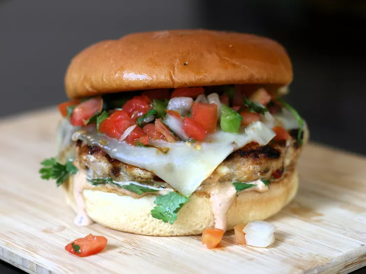

Chipotle Style Burger

These juicy, smoky and spicy chipotle chicken burgers are topped off with pepper Jack cheese, refreshing pico de gallo, and creamy chipotle mayo. Only use 1 or 2 chipotle peppers if you like things a little milder. Use fresh store-made pico de gallo to save time.
Ingredients
Chipotle Mayo :
- 1/4 cup mayonnaise
- 1 tablespoon adobo sauce from chipotle peppers
- 1 teaspoon lime juice
- 1/8 teaspoon salt
Burgers :
- 1 pound ground chicken
- 4 chipotle peppers in adobo sauce, minced
- 1/2 cup crumbled queso fresco
- 1 teaspoon salt
- 1/2 teaspoon ground coriander
- 1 tablespoon butter, melted
- 4 hamburger buns
- 1 tablespoon vegetable oil
- 1/4 cup coarsely chopped cilantro
- 4 slices pepper Jack cheese
- 1/2 cup prepared pico de gallo
Directions
- Stir mayonnaise, 1 tablespoon adobo sauce, lime juice, and the 1/8 teaspoon salt together in a small bowl; set aside.
In a medium bowl, combine ground chicken, chipotle peppers, queso fresco, salt, and ground coriander.
Form into 4 patties and place on squares of parchment paper. Refrigerate for 10 minutes to help patties firm up.
-
Preheat a large non-stick skillet over medium-high heat. Brush skillet with butter and toast buns, cut side down, until lightly browned, about 1 to 2 minutes; set aside.
-
Heat oil in the same skillet over medium heat. Fry burgers until chicken is no longer pink at the center and juices run clear.
An instant-read thermometer inserted near the center should read at least 165 degrees F (74 degrees C),
about 3 minutes per side. Turn heat off. Place cheese slices over patties and cover with a lid,
letting the residual heat melt the cheese.
-
Transfer water chestnut mixture to a medium skillet. Heat slowly over medium heat until aromatic.
- Meanwhile, transfer chicken from marinade into a large skillet; cook over medium-high heat, stirring,
until chicken is cooked through and juices run clear.
- Combine water chestnut mixture and sautéed chicken together in one skillet. Adjust heat and simmer
together until sauce thickens.